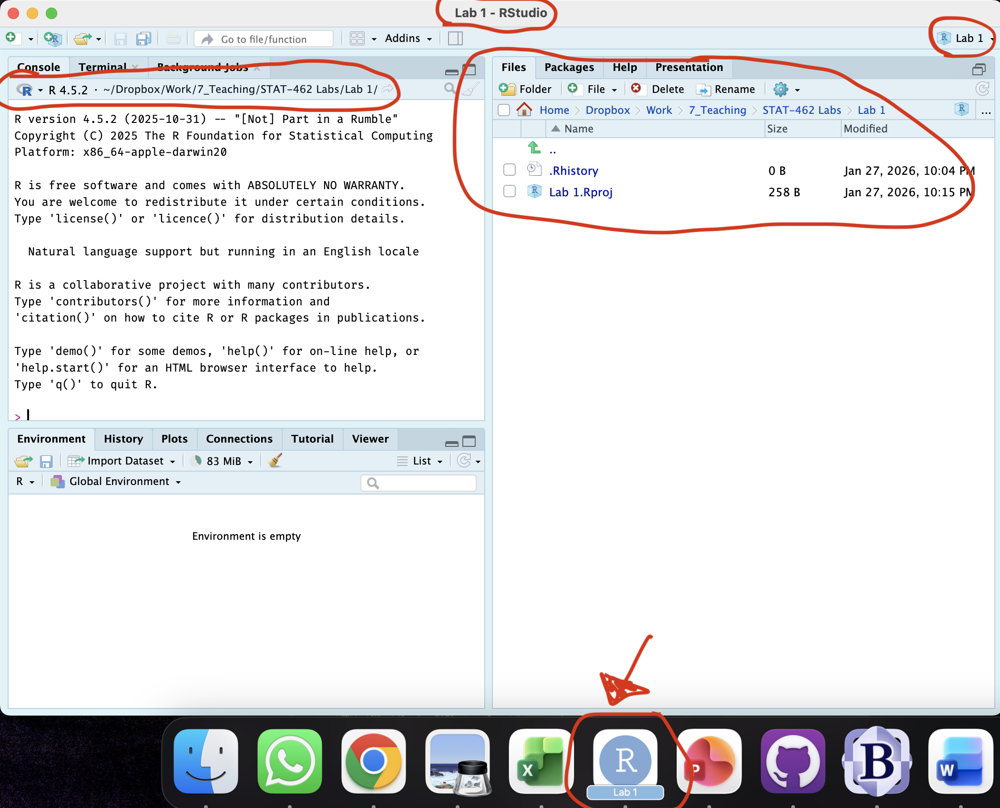
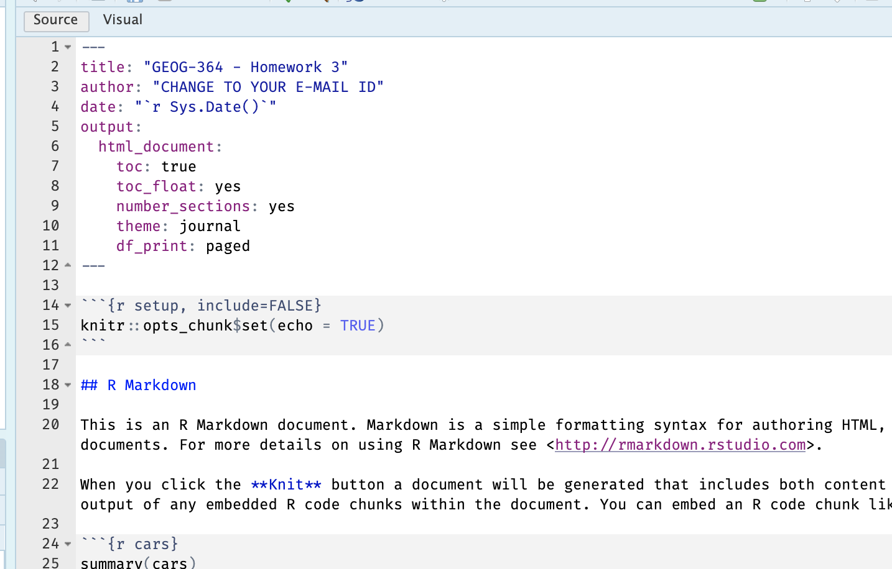
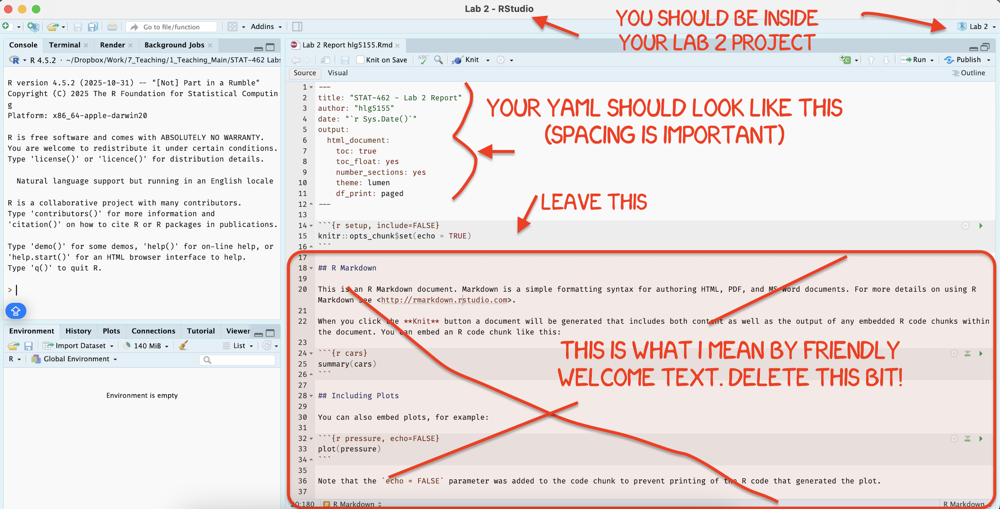

Homework 3
Aim
Welcome to Homework 3. This is worth 15/20 (the other 10 was for the in-class exercises). Overall each lab is worth 4.8% and you can drop your lowest score.
This is due the night before your next lab. The maximum time it should take is about 2-3 hrs of your time, plus lab time.
The aim of this lab is to get comfortable with spatial data and exploratory analysis.
0.1.4 Need help?
REMEMBER THAT EVERY TIME YOU RE-OPEN R-STUDIO YOU NEED TO RE-RUN ALL YOUR CODE CHUNKS. The easiest way to do this is to press the “Run All” button, in the “Run” menu at the top right of your screen
PART 1: LAB SET-UP (Important!)
STEP 1: Create your project for homework 3
[1A] Make a project for Homework 3 (tutorial here) Projects
[1B] Open your Homework3 project in R-Studio (see screenshot below).

Figure 0.7: Yours should look like this but say the name of your homework 3 project
STEP 2: Create your lab report structure & YAML code
[2A] Make a new RMarkdown Report (Tutorial here)
[2B] As we discussed last week, your YAML code at the top of your script tells R how to make the final report. It lives between the — lines. CAREFULLY replace the YAML code with this code (remember to only have one set of —) and press knit.
---
title: "GEOG-364 - Homework 3"
author: "CHANGE TO YOUR E-MAIL ID"
date: "`r Sys.Date()`"
output:
html_document:
toc: true
toc_float: yes
number_sections: yes
theme: journal
df_print: paged
---It should look like this.

Figure 0.8: Remember the —! This is easier in source mode
STEP 3: Change the theme
There are many easy themes you can select to change the look of your report.
[3A] In your YAML code, try changing the theme line to one of these, then press knit to see how it looks (some don’t work in some versions of R). YOU DON’T NEED THE QUOTES.
“bootstrap”, “cerulean”, “cosmo”, “darkly”, “flatly”, “journal”, “lumen”, “paper”, “readable”, “sandstone”, “simplex”, “spacelab”, “united”, “yeti”
Choose a theme of your choice.
STEP 4: NEW (ish) Adjust your knit options
When you press knit when you have packages, a load of library loading text will appear. This makes it hard to find your answers and makes your labs less professional. Although this was addressed in earlier labs, here’s how to fix this issue.
- [4A] Look at the first code chunk below the YAML code. The
opts_chunk$set()command allows us to set general knit options for the entire report.
knitr::opts_chunk$set(echo = TRUE)- Add in two more options, warning=FALSE and message=FALSE.
knitr::opts_chunk$set(echo = TRUE, warning=FALSE, message=FALSE)- When you press knit for now, nothing should happen (but no errors. )
STEP 5: Tidy up
- [5A] Delete all “the friendly welcome text”, below the knitr::opts_chunk so you have a nice clean report:

STEP 6: Finally.. sort out libraries
It’s good practice to have a single code chunk near the top of the script containing all your library commands. This is to stop duplicated code and to make it easy to see what you are loading before running your labs.
- [6A] Add a new code chunk under the opts one, and add the code inside it to load the packages.
library(tidyverse) # Lots of data processing commands
library(knitr) # Helps make pretty output files
library(ggplot2) # Output plots
library(skimr) # Summary statistics
library(sf) # Spatial commands
library(tmap) # Mapping commands
library(plotly) # Interactive plots
library(readxl) # Read from excel files[6A] Then press save or try to knit. If any packages are missing you will see
- EITHER a little yellow bar at the top of the screen asking if you want to install the libraries. Say yes, wait until the libraries are installed and try again.
- OR an error saying that it can’t find that library (it might also be a spelling mistake if you are sure it’s installed). In this case, you have to go to the app store and download it (Packages/Install).
- EITHER a little yellow bar at the top of the screen asking if you want to install the libraries. Say yes, wait until the libraries are installed and try again.
STEP 7: Check progress
- OK - so by now, you should be running the project for homework 3, you have created your lab report, the YAML code works and your libraries work. If not, STOP, go back and redo the tutorials or talk to Dr G/Samrin
PART 2: IN-CLASS WORK AND TAKE-HOME WORK
You are allowed and encouraged to work in groups for this section
STEP 8: Reading in data
In lab 1, we used data that was built into R. This week we will read in data from files.
[8A] Go to the canvas assignment page. Download all the datasets for the lab AND PUT THEM IN THE HOMEWORK 3 PROJECT FOLDER ON YOUR COMPUTER.
[8B] In the TEXT part of the report, below the library code chunk, make a new heading 1, text header called “In-Class work”.
[8C] Below that, make a new code chunk. Use the read_excel() command to load the “Lab03_house.xlsx” data into your report and assign it it to a variable called House (Tutorial 4 - Read Excel).
STEP 9: Understand where the data has come from
IMPORTANT. Imagine that next month, your friend is moving to Sindian Dist., in New Taipei City, Taiwan. They want to buy a house and have asked you to figure out what most impacts house price.
YOU ARE WRITING THIS REPORT FOR THEM!
- [9A] You have been given a specific dataset to help answer your friend’s question. Read more about the data here:https://archive.ics.uci.edu/ml/datasets/Real+estate+valuation+data+set.
- [9B] In your report, describe the data, including the object of analysis, population and variables. Now critique it! What aspects of this data are useful for your friend or not useful.
STEP 10: Basic stats
Now use R-Commands that you learned in so far tutorials to explore the summary statistics and distribution of the dataset.
[Step 10A]: Calculate the mean distance to the MRT and report your answer in the text with units!. (hint summary command or mean command)
[Step 10B]: Make a professional looking histogram of the price data with units! Tutorial - Histograms
[Step 10C]: Assume your sample is representative of the underlying population. What is the 90% confidence interval on the TRUE mean price? hint t.test
STEP 11: Make the data spatial
[Step 11A]: The spatial tutorial is FINALLY available. Make your house data ‘spatial’ by following this tutorial and assign it to a variable called house_sf Tutorial - “How to make existing data spatial”
[Step 11B]: Type house_sf into the console or a code chunk to bring up the summary. Use this to find out the bounding box of your data and write the bounding box into your report. Tutorial - “How to make existing data spatial”
[Step 11C]: Make an interactive qtm map of the price per unit area from your dataset (hint you already have this data/column, you only need to make the map) Tutorial - QTM maps
[Step 11D]: Explore the data spatially by looking at the maps and changing the basemaps. In the text, write a paragraph decribing what you see to help your friend understand the spatial patterns of house prices in the area.
Congrats! Finished!
Becuase of the technical issues getting this homework up, this is everything you need to do for this week. And check out the rubric for some very easy grading.
WHAT TO SUBMIT
If you are using your own computer
Press knit one final time. You will have created two files; a .Rmd file containing your code and a .html file for viewing your finished document.
Find the html and RmD files in your Lab 1 folder on your computer. Double click the html file to open it in your browser and check it’s the one you want to submit.
You need to submit BOTH of these files on the relevant Canvas assignment page.
You can also add comments to your submission as needed on the canvas page, or you can message Dr G.

Figure 0.5: Find them in your GEOG364 folder on your computer
If you are using Posit Cloud online
Press knit one final time. You will have created two files; a
.Rmdfile containing your code and a.htmlfile for viewing your finished document.Go to the files tab an click on the little check-box by the RmD file. Then click the blue “more button” and press export. Save onto your computer.

Figure 0.6: How do download the files from PositCloud
- Uncheck the .RmD box and click the box by the html file. Then click the blue “more button” and press export. Save onto your computer.
You need to submit BOTH of these files on the relevant Canvas assignment page.
You can also add comments to your submission as needed on the canvas page, or you can message Dr G.
CHECK YOUR GRADE!
RUBRIC
This is how you will be graded (plus any in-class components)
25/25: You made a good effort and answered all the questions. If you came to the lab, there’s probably about 10-15 mins additional work. CHECK EACH PART OF QUESTION 10 AND 11.
15/25: You attempted most of the lab and explained where you got stuck.
5/15: Any attempt! A single word or a canvas comment to say hi will get you 5 points even if you haven’t attended lab, because I want to know people who are simply dropping a lab compared to people who are really struggling.